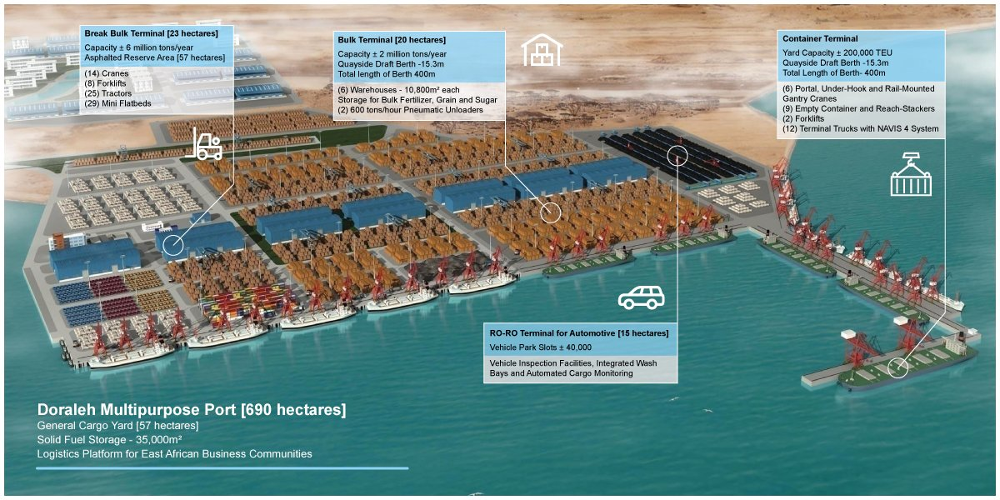
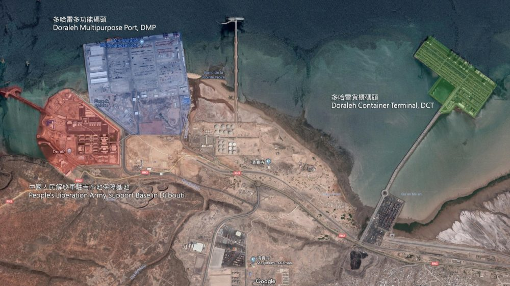

Toutes nos contributions
Inauguré en mai 2017, le Port polyvalent de Doraleh (DMP) a été conçu pour désengorger l'ancien port de Doraleh : en moins d'un an, le temps d'attente pour décharger les marchandises est passé de quelques semaines à quelques jours. Le DMP accueille des navires d'une capacité allant jusqu'à 100 000 TPL et dispose de certaines des installations les plus modernes d'Afrique : Une gamme de terminaux comprenant du vrac, du break, du conteneur et du RoRo 1 200 mètres de ligne de quai, pouvant accueillir 6 postes d'amarrage d'une profondeur de 15,3 m 690 hectares de terrain pour les industries Performance moyenne de 90 unités déchargées par heure (RoRo) et 31 conteneurs par heure (LoLo) Connexion directe à la voie ferrée Djibouti-Addis Abeba L'investissement total était de 590 millions de dollars. Il est prévu d'étendre davantage le DMP, pour atteindre 4 130 mètres de ligne de quai et 17 postes d'amarrage.

